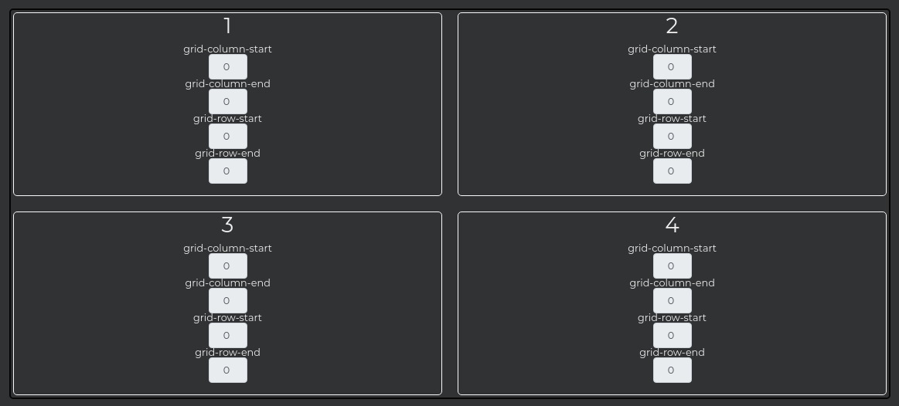
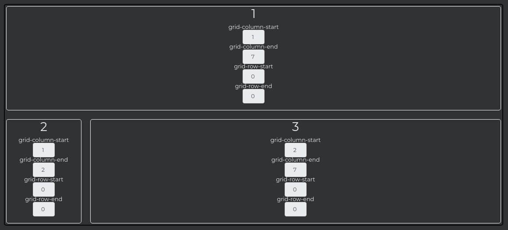
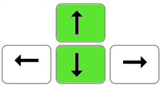
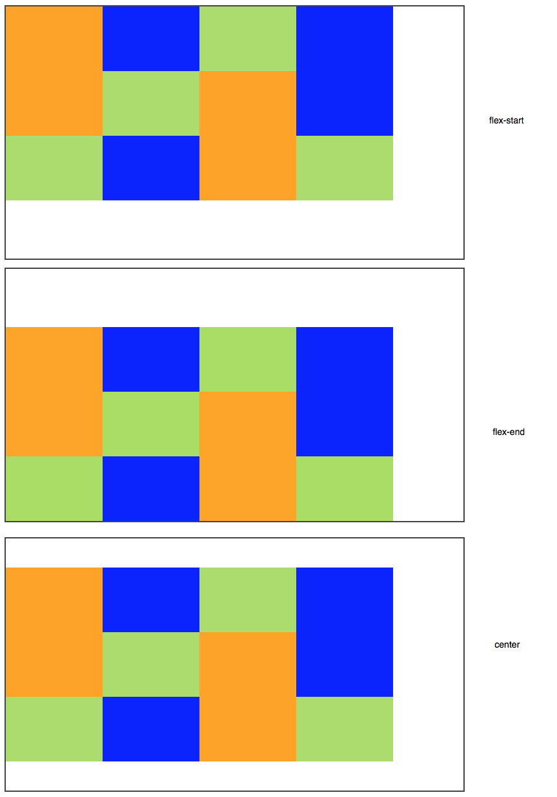
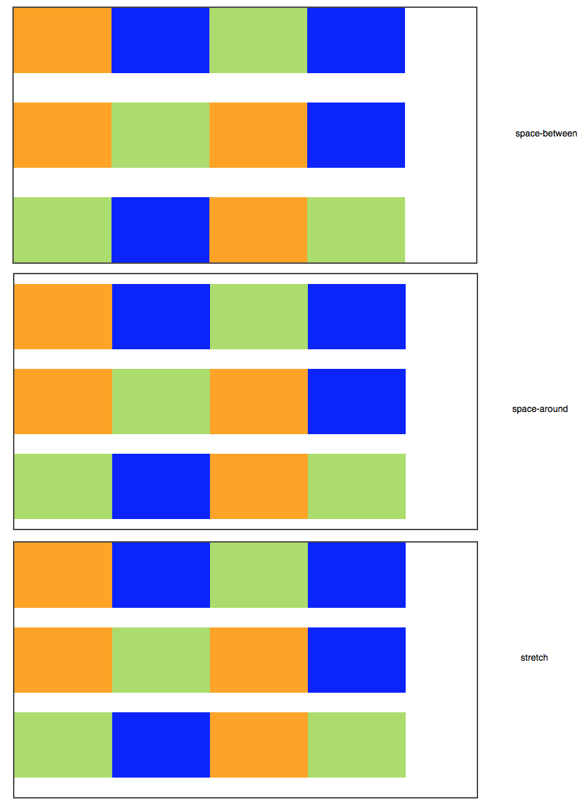
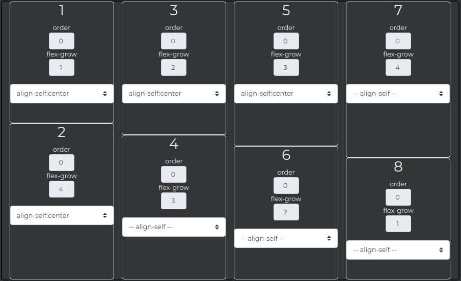

CSS Grid
Cet article est issu de CCS3 Grid Layout par Alsa Creations
La theorie:
Le module de positionnement "Grid Layout" est une spécification du W3C à l'état de Candidate Recommandation dont les premiers jets datent de 2004.
Sa documentation officielle est actuellement maintenue par trois contributeurs, dont une personne de Microsoft et une personne de Google.
CSS Grid permet d'aligner des éléments sous forme de colonnes et de lignes.
On crée un "contexte de grille" tout simplement en appliquant la déclaration display: grid à un élément conteneur qui constituera la trame générale, il deviendra un "grid-container" et ses enfants directs des "grid-items". Cette trame sera définie par un schéma virtuel formé de lignes et colonnes définissant des "cellules".
Tous les enfants (directs) de ce conteneur général seront automatiquement affectés par ce contexte particulier et pourront se placer au sein des "cellules" de la trame.
Les propriétés usuelles de Grid Layout
| Propriété | Détails |
|---|---|
grid, inline-grid |
déclaration d'un contexte de grille (création d'un "grid-container") |
grid-template-areas |
déclaration d'un "canevas" de cellules nommées (optionnel) |
grid-template-rows, grid-template-columns |
déclaration des dimensions de lignes et colonnes |
grid-row, grid-column |
placement d'un élément "grid-item" dans une ligne ou une colonne |
grid-gap, grid-column-gap, grid-row-gap |
espaces inter-colonnes ou inter-rangées (gouttières) |
align-items, justify-items |
alignement horizontal ou vertical |
align-self, justify-self |
alignement horizontal ou vertical d'éléments distincts |
Mise en oeuvre
On crée un "contexte de grille" tout simplement en appliquant la déclaration display: grid à un élément conteneur qui constituera la trame générale, il deviendra un "grid-container" et ses enfants directs des "grid-items". Cette trame sera définie par un schéma virtuel formé de lignes et colonnes définissant des "cellules".
Tous les enfants (directs) de ce conteneur général seront automatiquement affectés par ce contexte particulier et pourront se placer au sein des "cellules" de la trame.
Exemple 1 (affichage de deux blocs sur une ligne) :
<body>
<nav>nav</nav>
<section>section</section>
</body>
body {
display: grid;
grid-template-columns: 200px 400px;
}
nav {
grid-column: 1; /* placement en colonne 1 */
}
section {
grid-column: 2; /* placement en colonne 2 */
}

Note compatibilité : le module "Grid Layout", encore en brouillon (Working Draft), ne fonctionne actuellement que sur certains navigateurs, et parfois avec préfixes uniquement. Par exemple IE10+ nécessite des préfixes vendeurs -ms- pour être fonctionnel (par exemple : display: -ms-grid, ou -ms-grid-row: 2). Sur cette page, nous ne mentionnons que la syntaxe finalisée sans préfixe, mais vous devrez les ajouter pour vos tests.
Exemple 2 (grille de 4 emplacements) :
<body>
<nav>nav</nav>
<section>section</section>
<article>article</article>
<aside>aside</aside>
</body>
body {
display: grid;
grid-template-columns: 250px 400px;
grid-template-rows: 100px 300px;
}
nav {
grid-column: 1; grid-row: 1;
}
section {
grid-column: 2; grid-row: 1;
}
article {
grid-column: 1; grid-row: 2;
}
aside {
grid-column: 2; grid-row: 2;
}

Variante : la syntaxe de templates
Grid Layout autorise la visualisation sous forme de canevas, en nommant explicitement les emplacements de la grille à l'aide de chaînes de caractères ou de simples lettres.
Exemple 3 (template) :
#inGrid {
display: grid;
grid-template-areas: "h h"
"n c"
"f f";
}
nav {
grid-area: n; /* placement de <nav> dans l'emplacement "n" */
}

Les unités de largeur et hauteur
Le modèle d'affichage en grille ne se contente pas d'employer les unités de largeur et hauteur habituelles; il introduit des fonctions complexes permettant de s'adapter à des contextes de contenus différents :
| Unité | Détails |
|---|---|
px, %, em, ex, rem,… |
pixels, pourcentages, em,… (unités courantes) |
fr |
fraction(s) de l'espace restant |
min-content |
se rapporte à la largeur (ou hauteur) de l'élément le plus petit |
max-content |
se rapporte à la largeur (ou hauteur) de l'élément le plus grand |
minmax(min, max) |
exemple minmax(min-content, 20%) correspond à largeur 20% (ou hauteur), mais au minimum largeur (ou hauteur) du contenu |
auto |
s'adapte à la largeur (ou hauteur) du contenu |
fit-content |
identique à auto et aussi à minmax(min-content, max-content) |
Exemple 4 (illustration de l'unité "fr") :
body {
display: grid;
grid-template-columns: 250px 1fr; /* 250px + "largeur restante" */
grid-template-rows: 100px 1fr; /* 100px + "hauteur restante" */
}
nav {
grid-column: 1; grid-row: 1;
}
section {
grid-column: 2; grid-row: 1;
}
article {
grid-column: 1; grid-row: 2;
}
aside {
grid-column: 2; grid-row: 2;
}

Centrer les éléments
Par défaut, les éléments "grid-items" s'étirent pour occuper tout l'espace de leur cellule.
Cependant, Grid Layout permet d'aligner les contenus verticalement ou horizontalement à l'aide des propriétés suivantes :
| Propriété | Détails |
|---|---|
justify-items |
alignement au sein d'une cellule (dans l'axe principal). S'applique au conteneur |
justify-self |
alignement d'un grid-item au sein de sa cellule. S'applique au grid-item |
align-items |
alignement au sein d'une cellule (dans l'axe secondaire). S'applique au conteneur |
align-self |
alignement d'un grid-item au sein de sa cellule. S'applique au grid-item |
Les valeurs de ces propriétés peuvent être les suivantes :
| Valeur | Détails |
|---|---|
start |
aligne l'élément au début de la cellule (gauche ou droite selon le sens de la lecture) |
end |
aligne l'élément à la fin de la cellule (gauche ou droite selon le sens de la lecture) |
center |
place l'élément au centre de la cellule |
stretch |
étire l'élément (ses marges) pour occuper tout l'espace dans la cellule |
Exemple 5 (multiples centrages) :
body {
display: grid;
grid-template-columns: 200px 200px;
grid-template-rows: 200px 200px;
grid-template-areas: "a b" "c d";
}
header {
grid-area: a;
justify-self: center;
}
nav {
grid-area: b;
align-self: center;
}
article {
grid-area: c;
justify-self: center;
align-self: center;
}
footer {
grid-area: d;
}

Occuper plusieurs emplacements
Tels les célèbres attributs rowspan et colspan dédiés aux tableaux HTML, le module Grid Layout introduit la possibilité à un élément de s'étaler sur plusieurs emplacements, à la fois horizontalement et verticalement.
Le descripteur CSS span est chargé d'organiser cette distribution sur plusieurs lignes ou colonnes. Par défaut, un grid-item dispose d'un span de valeur 1.
Exemple 6 (column span) :
.container {
display: grid;
grid-template-columns: 10em 1fr;
grid-template-rows: min-content 1fr min-content;
height: 300px;
}
header {
grid-column: 1 / span 2;
grid-row: 1;
}
nav {
grid-column: 1;
grid-row: 2;
}
article {
grid-column: 2;
grid-row: 2;
}
footer {
grid-column: 1 / span 2;
grid-row: 3;
}

Les motifs de répétition
Une fonctionnalité particulièrement intéressante du positionnement sous forme de grilles est de pouvoir appliquer des motifs de répétition de colonnes ou de lignes (appelés "patterns").
La notation repeat() est faite pour ça.
Par exemple, si je souhaite répéter le motif de colonnes (50px 1em) dix fois dans la grille, j'écrirai grid-template-columns: repeat(10, 50px 1em)
Exemple 7 (patterns) :
.container {
display: grid;
grid-template-columns: 10px repeat(4, 1fr 10px);
}
header {
grid-column: 2 ;
}
nav {
grid-column: 4;
}
article {
grid-column: 6;
}
footer {
grid-column: 8;
}

Répartition automatique
Au sein de leur grid-container, les éléments grid-items se répartissent automatiquement par défaut. C'est à dire que si aucune place ne leur est assignée, ils se disposent dans le premier emplacement disponible au sein de la grille, dans le sens horizontal.
Il est possible de modifier ce comportement à l'aide de la propriété grid-auto-flow, dont les valeurs peuvent être :
-
row: répartition automatique rangée par rangée (valeur par défaut) -
column: répartition automatique colonne par colonne
Exemple 8 (grid-auto-flow: column)
.container {
display: grid;
grid-template-columns: repeat(2, 1fr);
grid-template-rows: 100px 100px 100px;
grid-auto-flow: column;
}

Vous avez dit "responsive" ?
Pour finir cette présentation du modèle de positionnement Grid Layout en apothéose, j'ai gardé le meilleur pour la fin.
L'un des avantages les plus flagrants d'une grille virtuelle, indépendante des éléments HTML qui peuvent s'y placer, est qu'il est extrêmement aisé de modifier la grille selon le contexte. Par exemple, pour s'adapter immédiatement aux différentes tailles d'écran, il suffit de... changer la grille initiale.
Associé aux CSS3 Media Queries, le modèle de positionnement en grille donne toute sa puissance, plus particulièrement si vous avez opté pour une trame sous forme de variante "template". En effet, seul le patron de départ nécessite d'être modifié : inutile d'intervenir sur la structure HTML, ni même sur le positionnement de chaque élément de page.
Exemple 09 (adaptation aux petits écrans) :
.container {
display: grid;
grid-template-areas: "a b c d";
grid-template-columns: repeat(4, 1fr)
}
/* Responsive */
@media (max-width: 640px) {
.container {
grid-template-areas: "a" "d" "b" "c";
grid-template-columns: 1fr;
}
}

La pratique:
Rien de mieux que la pratique pour apprendre. Afin de tester les principales propriétés de css grid, nous avons codé une page qui permet de tester css grid en live
ex: 4 div sur 2 lignes et 2 colonnes
ex: 3 div en disposition header sidebar content
Comment ca marche?
Appuyez sur les boutons plus et moins pour ajouter ou enlever des div
Appuyez sur le sélecteur display et choisissez display: grid
Utilisez les flèches Haut et Bas sur les input pour modifier les valeurs
Flexbox
Cet article est issu du cours Flexbox d'Openclassroom
La theorie:
Le principe de la mise en page avec Flexbox est simple : vous définissez un conteneur, et à l'intérieur vous placez plusieurs éléments. Imaginez un carton dans lequel vous rangez plusieurs objets : c'est le principe !
Un conteneur, des éléments
Sur une même page web, vous pouvez sans problème avoir plusieurs conteneurs. Ce sera à vous d'en créer autant que nécessaire pour obtenir la mise en page que vous voulez.
Commençons par étudier le fonctionnement d'un conteneur.

Le conteneur est une balise HTML, et les éléments sont d'autres balises HTML à l'intérieur :
<div id="conteneur">
<div class="element">Elément 1</div>
<div class="element">Elément 2</div>
<div class="element">Elément 3</div>
</div>Par défaut, les blocs se placent les uns en-dessous des autres:

Les Flexbox
Pour utiliser les flexbox, il suffit d'ajouter à la propriété display:flex; au CSS de votre conteneur:
#conteneur
{
display: flex;
}Alors les blocs se placent par défaut côte à côte!

La direction
Flexbox nous permet d'agencer ces éléments dans le sens que l'on veut. Avec flex-direction , on peut les positionner verticalement ou encore les inverser. Il peut prendre les valeurs suivantes :
- row : organisés sur une ligne (par défaut)
- column : organisés sur une colonne
- row-reverse : organisés sur une ligne, mais en ordre inversé
- column-reverse : organisés sur une colonne, mais en ordre inversé
Exemple :
#conteneur
{
display: flex;
flex-direction: column;
}
On peut tester l'ordre inversé:
#conteneur
{
display: flex;
flex-direction: column-reverse;
}
les blocs sont maintenant dans l'ordre inverse ! Sans avoir changé le code HTML qui reste le même depuis le début.
Le retour à la ligne
Par défaut, les blocs essaient de rester sur la même ligne s'ils n'ont pas la place (ce qui peut provoquer des bugs de design parfois). Si vous voulez, vous pouvez demander à ce que les blocs aillent à la ligne lorsqu'ils n'ont plus la place avec flex-wrap qui peut prendre ces valeurs :
- nowrap : pas de retour à la ligne (par défaut)
- wrap : les éléments vont à la ligne lorsqu'il n'y a plus la place
- wrap-reverse : les éléments vont à la ligne lorsqu'il n'y a plus la place en sens inverse
Exemple :
#conteneur
{
display: flex;
flex-wrap: wrap;
}Voici l'effet que prennent les différentes valeurs sur une même illustration :

Les Alignements
Les éléments sont organisés soit horizontalement (par défaut), soit verticalement. Cela définit ce qu'on appelle l'axe principal. Il y a aussi un axe secondaire (cross axis) :
- Si vos éléments sont organisés horizontalement, l'axe secondaire est l'axe vertical.
- Si vos éléments sont organisés verticalement, l'axe secondaire est l'axe horizontal.
Nous allons découvrir comment aligner nos éléments sur l'axe principal et sur l'axe secondaire.
Aligner sur l'axe principal
Pour faire simple, partons sur des éléments organisés horizontalement (c'est le cas par défaut). Pour changer leur alignement, on va utiliser justify-content, qui peut prendre ces valeurs :
- flex-start : alignés au début (par défaut)
- flex-end : alignés à la fin
- center : alignés au centre
- space-between : les éléments sont étirés sur tout l'axe (il y a de l'espace entre eux)
- space-around : idem, les éléments sont étirés sur tout l'axe, mais ils laissent aussi de l'espace sur les extrémités
Par exemple :
#conteneur
{
display: flex;
justify-content: space-around;
}Voici une image présentant toutes les valeurs possibles pour voir ce que ça donne:

Avec une simple propriété, on peut intelligemment agencer nos éléments comme on veut
Ca marche aussi si vos éléments sont dans une direction verticale. Dans ce cas, l'axe vertical devient l'axe principal, et justify-content s'applique aussi
#conteneur
{
display: flex;
flex-direction: column;
justify-content: center;
height: 350px; /* Un peu de hauteur pour que les éléments aient la place de bouger */
}
Aligner sur l'axe secondaire
Si nos éléments sont placés dans une direction horizontale (ligne), l'axe secondaire est... vertical. Et inversement, si nos éléments sont dans une direction verticale (colonne), l'axe secondaire est horizontal. Avec align-items, nous pouvons changer leur alignement sur l'axe secondaire. Il peut prendre ces valeurs :
- stretch : les éléments sont étirés sur tout l'axe (valeur par défaut)
- flex-start : alignés au début
- flex-end : alignés à la fin
- center : alignés au centre
- baseline : alignés sur la ligne de base (semblable à flex-start)
Pour ces exemples, nous allons partir du principe que nos éléments sont dans une direction horizontale
#conteneur
{
display: flex;
justify-content: center;
align-items: center;
}Un alignement sur l'axe secondaire avec align-items nous permet de centrer complètement l'élément dans le conteneur !

Aligner un seul élément
Il est possible de faire une exception pour un seul des éléments sur l'axe secondaire avecalign-self:
#conteneur
{
display: flex;
flex-direction: row;
justify-content: center;
align-items: center;
}
.element:nth-child(2) /*On prend le deuxième bloc élément*/
{
background-color: blue;
align-self: flex-end; /*Seul ce bloc sera aligné à la fin*/
}
/* ... */
Répartir plusieurs lignes
Si vous avez plusieurs lignes dans votre Flexbox, vous pouvez choisir comment celles-ci seront réparties avec align-content. Cette propriété n'a aucun effet s'il n'y a qu'une seule ligne dans la Flexbox. Prenons donc un cas de figure où nous avons plusieurs lignes. Je vais rajouter des éléments :
<div id="conteneur">
<div class="element"></div>
<div class="element"></div>
<div class="element"></div>
<div class="element"></div>
<div class="element"></div>
<div class="element"></div>
<div class="element"></div>
<div class="element"></div>
<div class="element"></div>
<div class="element"></div>
<div class="element"></div>
<div class="element"></div>
</div>J'autorise mes éléments à aller à la ligne avec flex-wrap :
#conteneur
{
display: flex;
flex-wrap: wrap;
}On obtient plusieurs lignes dans une flexbox:

Rien de vraiment nouveau. Voyons voir comment les lignes se répartissent différemment avec la nouvelle propriété align-content. Elle peut prendre ces valeurs :
- flex-start : les éléments sont placés au début
- flex-end : les éléments sont placés à la fin
- center : les éléments sont placés au centre
- space-between : les éléments sont séparés avec de l'espace entre eux
- space-around : idem, mais il y a aussi de l'espace au début et à la fin
- stretch (par défaut) : les éléments s'étirent pour occuper tout l'espace
Voici ce que donnent les différentes valeurs :


Ordonner les éléments
Sans changer le code HTML, nous pouvons modifier l'ordre des éléments en CSS grâce à la propriété order. Indiquez simplement un nombre, et les éléments seront triés du plus petit au plus grand nombre. Reprenons une simple ligne de 3 éléments :
#conteneur
{
display: flex;
}
Si je dis que le premier élément sera placé en 3e position, le second en 1ère position et le troisième en 2nde position, l'ordre à l'écran change !
.element:nth-child(1)
{
order: 3;
}
.element:nth-child(2)
{
order: 1;
}
.element:nth-child(3)
{
order: 2;
}
Faire grossir ou maigrir les éléments
Avec la propriété flex, nous pouvons permettre à un élément de grossir pour occuper tout l'espace restant.
.element:nth-child(2)
{
flex: 1;
}
Le nombre que vous indiquez à la propriété flex indique dans quelle mesure il peut grossir par rapport aux autres.
.element:nth-child(1)
{
flex: 2;
}
.element:nth-child(2)
{
flex: 1;
}
La pratique:
A l'image de CSS Grid, nous avons aussi codé une page qui permet de tester les différentes propriétés de flexbox, sur le conteneur et sur les éléments en live.


Comment ca marche?
Appuyez sur les boutons plus et moins pour ajouter ou enlever des div
Appuyez sur le sélecteur display et choisissez display: flex ou flex-inline
Utilisez les flèches Haut et Bas sur les input pour modifier les valeurs